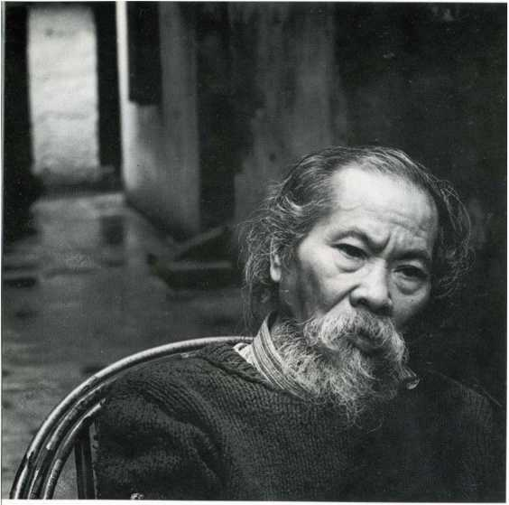

Nhân cách của nhà văn chính là văn cách của anh ta."
Trần Dần, 1988

Trần Dần (1926-1997). Ảnh: Dương Minh Long
⚝ ⚝ ⚝
Từ lần xuất bản đầu tiên và duy nhất năm 2001, cuốn sách đã tuyệt bản này là nguồn tư liệu vô giá về một giai đoạn dày đặc biến động của lịch sử Việt Nam thế kỷ 20. Đọc lại những ghi chép của nhà thơ Trần Dần (1926-1997) về thời kì Cải cách Ruộng đất và Nhân văn-Giai phẩm, tôi vẫn kinh ngạc bởi sự thành thực tận cùng, thành thực đến tàn nhẫn khắc nghiệt, của ông với chính bản thân mình. Cuộc vật lộn của ông vói thòi đại không phải chỉ là một bi kịch từ vị thế nạn nhân mà đa tầng, đa diện hon nhiều: Ông cũng là một tác nhân và truớc hết là một chứng nhân lỗi lạc, với một khả năng quan sát, phân tích, ghi nhận, diễn đạt hiếm có và một lí tuởng sục sôi cháy bỏng với nghệ thuật văn chuông.
Ghi 1954-1960 của Trần Dần đuợc tái bản đúng dịp tuỏng niệm 25 năm ngày ông qua đòi. Tôi đã biên tập và hiệu đính bản in năm 2001, bổ sung một số chú thích và chinh sửa một số chi tiết căn cứ trên những hiểu biết ngày càng đuợc mở rộng trong thời gian qua, hi vọng có thể chính thức thay thế nhũng phiên bản trôi nổi không rõ nguồn gốc trên mạng.
Tôi tin rằng Trần Dần rất vui lòng thấy bản PDF cúa cuốn sách này là sở hữu chung của cộng đồng độc giả tiếng Việt mà ông đã góp phân gây dựng bằng tài năng và số phận khác thuờng cúa mình.
Berlin, 17/1/2022
Phạm Thị Hoài
⚝ ⚝ ⚝
"Thế là tôi mất bẩy năm kể từ ngày hoà bình bắt đâu sinh sự cho đến ngày xoá án... Bẩy năm trong văn học có nghĩa ỉý gì? Một cái chớp mắt. Bẩy năm trong đời một con người thì có nghĩa lý lắm! Chớp mắt mãi không xong." Trần Dần ghi như thế ngày 7/7/1958 khi nhận kỷ luật treo bút ba năm. Như thể ông đã lường trước cái "mãi không xong” của ba năm rồi sẽ thành ba m ươi năm, và một lần nữa lại thu vén sao cho cái mất càng ngày càng phình ra quái gở của số phận mình có thể đút vừa lỗ kim bé tí cứa hy vọng được. "Được cái hoạn nạn" quả nhiên là lời tổng kết cuối cùng của ông, người mê biện chứng và nghiện nghịch lý, về "ván đời" lạ lùng của mình.
Những ghi chép của Trần Dần tập hợp trong sách này là chứng chỉ tự cấp về bây năm mở ra và quyết định cái thành quả hoạn nạn đó. Với chúng ta, đó là những văn liệu và sử liệu vô giá về một giai đoạn văn chương và lịch sử cho đến nay vẫn xếp sổ, nếu quả còn có sổ. Vói Trần Dần, đó là phần mở đầu "tác phẩm dành cho một người", tác phẩm bất đắc dĩ mà thành đồ sộ và gay câh nhất của văn nghiệp ông, khi "ghi trở nên một hình phạt", khi ông "bắt tội" mình, cưỡng bức mình vào một "chế độ ghi sổ tay" ba muoi năm ròng rã.
Tôi không có cách nào khác là tự ý chọn lựa trong di cảo văn học của Trần Dần từ 5 tập sô tay dày đặc nhũng dòng ghi vốn không dành cho công chúng đê’ biên soạn sách này. Những đoạn bỏ, đánh dấu [...], là những đoạn tôi cho rằng riêng tư đáng được ở yên, hoặc liên quan tói những nguôi và việc chưa vượt cái mốc thời gian ba năm sau khi Trần Dần qua đời, hoặc là nhũng đoạn dùng vào một sách khác thì hợp chỗ hon. Những đoạn đánh dấu (...) là những đoạn tôi đành để trống vì không đọc ra mặt chữ hoặc còn chưa hiểu rõ ý nghĩa. Ngoài ra tôi đã phải quyết định, tuy không hoàn toàn tin tưởng rằng đúng, là chuyển một phần lớn phép dùng chính tả riêng của Trần Dần sang phép chính tả thông dụng. Sở dĩ như vậy, vì tôi cho rằng phép chính tả trong nhũng ghi chép này một phần là thói quen còn nhiều ngẫu nhiên của thuở ấy, một phần nhằm mục đích ghi cho nhanh, chứ chưa đóng vai trò tất yếu như trong một số tác phẩm sau này của Trần Dần. Còn lại, tôi giữ nguyên văn bản như vậy: cách viết tắt tên người, tên cơ quan, xuống dòng, gạch dưới, lối ngắt câu, lối dùng lời thoại, v.v..., không sửa đổi, chinh đốn điều gì. Việc tập họp tài liệu, biên soạn các phần tiểu sử, phụ lục, chú thích và thư mục do nhiều người góp sức song không tránh khỏi thiếu sót cần bổ sung dần. Sự bổ sung đầy đủ nhất là tiếp tục công bố những phần tiếp theo trong "tác phẩm dành cho một người" này.
Như thế, kết quả của hình phạt vói một người lại có thể là quà tặng không ngờ tới bao nhiêu người khác.
Berlin, tháng Tư năm 2000
Phạm Thị Hoài
⚝ ⚝ ⚝
1926
Trần Dần, tên thật là Trần Văn Dần, sinh ngày 23/8 (tức 16/7 năm Bính Dần) trong một gia đình khá giả tại phố Năng Tĩnh, thành phố Nam Định.
Học tiêu học, cao đẳng tiêù học và đậu bằng Thành chung tại Nam Định; sau đó học trung học tại Hà Nội, đậu Tú tài Pháp. Bắt đầu làm thơ. Yêu thích thơ Baudelaire, Verlaine và phái Tuợng trung.
1943
Trần Dần bắt đầu quan hệ vói nhóm văn nghệ cánh tả xung quanh nhà xuất bản Hàn Thuyên: Truơng Tửu (tức Nguyễn Bách Khoa), Luơng Đức Thiệp...
Viết Chiêu mưa trước cửa (thơ).
Truông Chinh và Nguyễn Ái Quốc soạn Đe cương Văn hóa Việt Nam.
1944
Viết Hôn xanh ãị kỳ (thơ).
1945
19/8: khởi nghĩa giành chính quyền tại Hà Nội.
2/9: Chủ tịch Hồ Chí Minh đọc Tuyên ngôn Độc lập, khai sinh nước Việt Nam Dân chủ Cộng hoà.
Phạm Quỳnh bị giết.
1946 Nhất Linh sang Trung Quốc lưu vong.
Trần Dần cùng Trần Mai Châu, Đinh Hùng, Vũ Hoàng Địch, VĨ1 Hoàng Chương... lập nhóm thi sĩ tượng trung Dạ Đài. Viết Vê nèo thanh tuỳên (thơ, in lại trong tập Thơ Mới 1932-1945, NXB Hội Nhà văn, 1999).
Tạp chí Dạ Đài ra số 1 ngày 16/11 đăng bản tuyên ngôn của phái Tượng trưng do Trần Dần viết. Số 2 ngày 19/12 chưa kịp ra mắt thì kháng chiến bùng nổ.
1947 Trần Dần về Nam Định tham gia kháng chiến, đảm nhận công tác thông tin tuyên truyền.
Khái Hưng mất tích.
1948 Trần Dần gia nhập quân đội, lúc đầu tham gia chiến đấu ở Thượng Lào và biên giói Tây Bắc, sau làm công tác báo chí và văn công cùng Vũ Khiêu, Vũ Hoàng Địch tại ở Ban Chính trị Trung đoàn 148 Sơn La.
16-20/7: Hội nghị Văn hoá Toàn quốc lần thứ 2 tại Việt Bắc, Trường Chinh đọc bản báo cáo Chủ nghĩa Mác và văn hoá Việt Nam.
23-25/7: Đại hội Văn nghệ Toàn quốc lần thứ nhất tại Việt Bắc, thành lập Hội Văn nghệ Việt Nam
1949
Trần Dần được kết nạp vào Đảng Cộng sản Đông Dương. Vẽ và viết cho các báo Sông Đà, Giải phóng...
Hội nghị tranh luận văn nghệ tại Việt Bắc, Tố Hữu đọc tham luận Xây dựng rìên văn nghệ nhân dân, Nguyễn Đình Thi đọc tham luận về chủ nghĩa hiện thực xã hội chủ nghĩa.
1/10: nước CHND Trung Hoa ra đòi.
1950
Trần Dần tham gia sáng lập nhóm văn nghệ quân đội đầu tiên: nhóm Sông Đà, vói Trần Thư, Hoài Niệm... Tranh vẽ bộ đội theo lối lập thể và thơ bậc thang của ông bị chê là khó hiêù. Do bất đồng ngày càng rõ ràng vói các cán bộ chính trị ở trung đoàn, ông xin chuyển công tác về Phòng Văn nghệ Quân đội thuộc Tổng cục Chính trị.
1951-1953
Trần Dần tham dự các khoá tuyên huâh toàn quân và chỉnh huấn chính trị. về nhận công tác mới tại Cục Quân huấn và úy ban Trung ương Hội Văn nghệ Quân đội, phụ trách các lớp đào tạo và tập huâh chính trị cho văn công trong quân đội.
1953
Trần Dần bị phê bình là giảng sai chính sách văn nghệ của Đảng trong các khoá đào tạo cán bộ văn công do ông phụ trách.
5/3: Stalin qua đòi
17/6: Nổi dậy tại CHDC Đức. Liên Xô can thiệp vũ trag vào CHDC Đức.
19/12: Luật Cải cách Ruộng đất được ban hành.
1954
13/3: Chiến dịch Điện Biên Phủ bắt đầu. Trần Dần tình nguyện tham gia chiến dịch cùng nhạc sĩ Đỗ Nhuận và hoạ sĩ Tô Ngọc Vân, thủ trưởng đơn vị là tướng Trần Độ. 7/5: Chiến dịch Điện Biên Phủ toàn thắng. 17/6: Cái chết của Tô Ngọc Vân trong chiến dịch tác động mạnh mẽ đến Trần Dần. Ông viết một hoi tiêù thuyết Người người lớp lớp, cuốn tiêu thuyết duy nhất của văn học Việt Nam thòi kỳ đó về Điện Biên Phủ (xuất bản cùng năm, NXB Quân đội Nhân dân)
20/7: Ký kết Hiệp định Genève đình chi chiến sự ở Việt Nam
Vũ Hoàng Chuơng, Đinh Hùng, Bàng Bá Lân, Đông Hồ, Nguyễn Hiến Lê,... di cư vào miền Nam. Trong gần một triệu người miền Bắc di cư có các nhà văn sau này của Việt Nam Cộng hòa: Mai Thảo, Thanh Tâm Tuyền, Nguyên Sa, Duyên Anh, Doãn Quốc Sỹ, Duong Nghiễm Mậu...
Gia đình bà Bùi Thị Ngọc Khuê (vợ Trần Dần) di cu vào miền Nam.
Hồ Phong công bố bức tâm thư ba trăm ngàn chữ gửi BCHTƯĐCS Trung Quốc phê phán "năm luõi dao đâm vào óc các nhà văn cách mạng".
10/10: Chính phủ kháng chiến tiếp quản Hà Nội.
Trần Dần được cử sang Trung Quốc viết truyện phim Điện Biên Phủ, cùng đi có Đỗ Nhuận. 10/10: Khỏi hành. 14/10: Đến Nam Ninh. Sau đó đi Bắc Kinh. 12/12: Trở về Hà Nội
Viết Anh đã thấy (thơ), Tiếng trống tương lai (thơ).
1955
Tháng 1: Hồ Phong công khai tự phê bình. Tháng 5: Hồ Phong bị bắt và bị kết án 14 năm lao cải.
Tháng 3, Trần Dần tham gia phê bình tập thơ Việt Bắc của Tố Hữu
Tháng 4, Trần Dần cùng Đỗ Nhuận, Hoàng Tích Linh, Hoàng Cầm, Trúc Lâm, Tử Phác đệ trình Dự thảo đê nghị cho một chính sách văn hoá gồm 32 điểm, yêu cầu tự do sáng tác, trả quyền lãnh đạo văn nghệ về tay văn nghệ sĩ, xóa bỏ hệ thống chính trị viên trong các đoàn văn công quân đội, sửa đổi chính sách văn nghệ trong quân đội.
Viết đơn giải ngũ và đơn xin ra khỏi Đảng, đồng thòi quyết định kết hôn vói bà Bùi Thị Ngọc Khuê bất chấp sự phản đối của các cấp lãnh đạo.
Từ 13/6 đến 14/9: Trần Dần bị giam theo quân kỷ để kiểm thảo.
Tháng 10: Tổng tuyển cử tại miền Nam, Ngô Đình Diệm trở thành Tổng thống Việt Nam Cộng Hoà.
Từ 2/11 đến giữa tháng 2/1956: Đi tham quan Cải cách Ruộng đất tại Bắc Ninh.
Viết Cách mạng tháng Tám (tho), Nhất định thắng (tho).
1956
Cuối tháng 1, trong lúc Trần Dần ở Bắc Ninh, Hoàng Cầm cho đăng bài tho Nhất định thắng trong Giai phẩm mùa Xuân. Tờ tạp chí bị tịch thu.
Giữa tháng 2, Trần Dần trở về Hà Nội. Hội Văn nghệ tổ chức hội nghị phê bình bài tho Nhất định thắng vói 150 văn nghệ sĩ tham dự. Trần Dần bị kết án là đồ đệ của Hồ Phong, mất lập truòng giai cấp, đi nguợc lại đuòng lối của Đảng và bị giam 3 tháng tại Hoả Lò, Hà Nội.
Tháng 2: Đại hội 20 Đảng Cộng sản Liên Xô phê phán Stalin. Phục hồi danh dự cho các văn nghệ sĩ bị giết và kết án dưới thời Stalin.
7/3: Báo Văn nghệ số 110 đăng bài "Vạch trần tính chất phản động trong bài thơ Nhất định thắng của Trần Dần" của Hoài Thanh. Trần Dân dùng dao cạo cứa cô’ định tự tử trong tù.
Trần Thị Băng Kha, con gái đầu lòng của Trần Dần ra đời.
Tháng 4: Dư luận bất bình về việc trao giải thưởng văn nghệ 1954-1955.
26/5: Mao Trạch Đông phát động chiến dịch Bách gia Vận động với khẩu hiệu Bách hoa ĩê phóng, bách gia tranh minh (Trăm hoa đua nở, trăm nhà đua tiếng).
28/6: Nổi dậy tại Poznan (Ba Lan). Tháng 7: Hoàn thành Cải cách Ruộng đất ở miền Bắc.
Tháng 8: Lóp học 18 ngày của Hội Văn nghệ Việt Nam về đường lối cải cách chống tệ sùng bái cá nhân Stalin tại Liên Xô.
29/8: Giai phẩm mùa Thu tập I xuất bản, có đăng bài Phê bình lãnh đạo văn nghệ của Phan Khôi.
Tháng 9: Hội nghị lần thứ 10 BCHTƯ Đảng về sửa chữa sai lầm trong Cải cách Ruộng đất.
15/9: Báo Nhân văn ra số 1, do Phan Khôi làm chủ nhiệm, Trần Duy làm thu ký toà soạn, Minh Đức xuất bản; ban biên tập gồm Nguyễn Hữu Đang, Trần Duy, Lê Đạt, Hoàng Cầm, có đăng bài Con nguời Trần Dan - Tiến đến việc xét lại một vụ án văn học: Tran Dãn của Hoàng Cầm.
30/9: Báo Nhân văn ra số 2.
2/10: Ban Thuờng vụ Hội Văn nghệ Việt Nam ra thông cáo thừa nhận sai lầm trong việc phê bình bài tho Nhất định thắng.
8/10: Tái bản Giai phẩm mùa Xuân vói bài tho Nhất định thắng.
15/10: Báo Nhân văn ra số 3.
Giai phẩm mùa Thu tập II xuất bản.
Đất Mới số 1 (số duy nhất) xuất bản.
Tháng 10-11: Nổi dậy tại Hungary. Liên Xô can thiệp vũ trang vào Hungary.
Tháng 10: Nhóm văn học Sáng Tạo ra đời tại Sài Gòn vói Mai Thảo, Thanh Tâm Tuyền, Doãn Quốc Sỹ... Phan Khôi đuợc cử sang Trung Quốc dự đại hội kỷ niệm 20 năm ngày Lỗ Tâh qua đòi.
5/11: Báo Nhân văn số 4 xuất bản.
20/11: Báo Nhân văn số 5 xuất bản.
Tháng 12: Giai phẩm mùa Đông xuất bản.
9/12: Hồ Chủ tịch ký sắc lệnh vê chế độ báo chí.
15/12: ủy ban Hành chính Hà Nội ra thông báo đóng cửa báo Nhắn văn. Số 6 (số cuối cùng) của Nhân văn không đuợc in.
1957
20-28/2: Đại hội Văn nghệ Toàn quốc lần thứ 2 tại Hà Nội với gần 500 đại biểu. Truông Chinh kêu gọi đấu tranh đập nát luận điệu phản động Nhân văn-Giai phẩm. Thành lập Hội Liên hiệp Văn học Nghệ thuật Việt Nam.
1-5/4: Hội nghị thành lập Hội Nhà văn Việt Nam, Tô Hoài làm Tổng Thu ký, co quan ngôn luận là báo Văn, do Nguyễn Công Hoan làm Tổng biên tập, Nguyễn Tuân Phó Tổng biên tập, Nguyên Hồng Tổng Thu ký toà soạn.
10/5: Báo Văn ra số 1.
Tháng 7-8, Nguyên Hồng, Nguyễn Tuân, Tô Hoài tranh luận nhân việc báo Học tập (co quan lý luận của BCHTƯĐCSVN) phê phán báo Văn.
27/9: Báo Văn số 21 đăng bài thơ Lời mẹ dặn của Phùng Quán.
15/11: Báo Văn số 28 đăng bài thơ Hãy đi mãi của Trần Dần.
Trần Dần viết Bài thơ Việt Bắc (trường ca, xuất bản năm 1991)
Đinh Linh bị khai trừ khỏi ĐCS Trung Quốc sau 25 năm là đảng viên. (Bà còn được phép làm lao công một thời gian trong trụ sở Hội Nhà văn Trung Quốc, trước khi bị đày đi lao cải và ngồi tù cho đến năm 1975.)
Chỉnh huâh văn nghệ tại Liên Xô, Ba Lan, CHDC Đức.
Nhóm Bách Khoa ra đòi tại Sài Gòn.
1958
6/1: Bộ Chính trị ra nghị quyết số 30 NQ/TU về việc châh chỉnh công tác văn nghệ.
10/1: Báo Văn số 36 (số cuối cùng) đăng truyện ngắn Ông Năm Chuột của Phan Khôi.
Tháng 2: Lớp học đấu tranh tư tưởng vói 272 văn nghệ sĩ đảng viên tham dự
Từ 3/3 đến 14/4: Trần Dần tham dự lóp học đấu tranh tư tưởng tại Thái Hà Ấp với 304 cán bộ văn hoá văn nghệ tham dự.
Tháng 3: Tạp chí Học tập (cơ quan lý luận và chính trị do Trung ương Đảng trực tiếp lãnh đạo từ 1955 đến 1976) đăng bài Chống
chủ nghĩa xét lại trong văn nghệ của Nguyễn Đình Thi.
10/4: Thụy An, Nguyễn Hữu Đang, Trần Thiếu Bảo (Minh Đức) bị bắt giam tại Hỏa Lò, Hà Nội.
4/6: Hội nghị Ban Chấp hành Hội Liên hiệp Văn học Nghệ thuật họp tổng kết cuộc đấu tranh chống Nhân văn-Giai phẩm.
5/6: Nghị quyết của 800 văn nghệ sĩ hoan nghênh kết quả thắng lọi của cuộc đấu tranh chống Nhân văn-Giai phẩm.
30/6: Trần Trọng Văn, con trai Trần Dần ra đời.
2/7: Bầu Ban Chấp hành mới của Hội Nhà văn, Tổng Thu ký là Nguyễn Đình Thi.
7/7: Thông báo kỷ luật các văn nghệ sĩ đã tham gia Nhân văn-Giai phẩm. Trần Dần bị khai trừ khỏi Hội Nhà văn và đình chỉ xuất bản trong thời hạn 3 năm.
22/8 đến tháng 2/1959: Trần Dần đi lao động cải tạo tại nông truòng Chí Linh cùng với Lê Đạt, Đặng Đình Hung, Tử Phác.
Nhất Linh thành lập nhóm Văn hoá Ngày nay tại Sài Gòn.
Mao Trạch Đông phát động chiến dịch Đại Nhảy vọt.
Pastemak, nhà văn Xô-viết đầu tiên được trao Giải Nobel Văn chương, song không được sang Thụy Điển nhận giải thưởng.
1959
16/1: Phan Khôi qua đời.
Trần Dần viết sắc lệnh 59 (thơ), Con tầu xã hội (thơ), 17 tĩnh ca (thơ). Bắt đầu viết Cổng tỉnh (thơ - tiêù thuyết)
Tháng 11: Trần Dần được phân công dịch tại ga-ra Hội Nhà văn cùng vói Lê Đạt, Phùng Cung, Nguyễn Khắc Dực.
10/12: Khai mạc phiên toà xử "5 tên gián điệp phản động phá hoại cách mạng: Thụy An, Nguyễn Hữu Đang, Trần Thiếu Bảo, Phan Tại, Lê Nguyên Chí.
1960
19/1: Thụy An và Nguyễn Hữu Đang bị kết án 15 năm tù, Trần Thiếu Bảo 10 năm, Phan Tại 6 năm, Lê Nguyên Chí 5 năm.
19/3 đến 11/5: Trần Dần đi lao động cải tạo tại khu gang thép Thái Nguyên cùng với Lê Đạt. Sau đó về Hà Nội nghỉ phép.
13/6 đến 18-8: Trần Dần lại đi lao động cải tạo tại Thái Nguyên. Sau đó ốm nặng.
Hoàn thành Công tỉnh (xuất bản năm 1994). Từ đó sống âm thầm tại Hà Nội bằng nghề dịch sách, đứng ngoài mọi sinh hoạt văn nghệ chính thống.
Miền Bắc hoàn thành kế hoạch 3 năm cải tạo và phát triển kinh tế văn hoá (1958-1960)
Xung đột Trung-Xô bắt đầu.
1961
Miền Bắc bắt đầu kế hoạch xây dựng chủ nghĩa xã hội 5 năm lần thứ nhất (1961-1965).
Tháng 5: Phùng Cung bị bắt, tù 12 năm không án.
13/8, CHDC Đức xây Bức tuòng Berlin. Trần Dần viết Đêm núm sen (tiêù thuyết).
1962
A. Solzhenitsyn xuất bản Một ngày trong đời Ivan Denisovich.
1963
Đảo chính tại Sài Gòn. Ngô Đình Diệm và Ngô Đình Nhu bị ám sát.
7/7: Nhất Linh tự tử tại Sài Gòn.
Trần Dần viết Jờ Joạcx (tho).
1964
Hoa Kỳ chính thức tiến hành chiến tranh quân sự tại Việt Nam.
Hoa Kỳ ném bom miền Bắc lần thứ nhất.
Nhà tho Joseph Brodsky bị kết án về tội ăn bám, vì hoạt động văn học ngoài phạm vi của Hội Nhà văn Liên Xô.
Trần Trọng Vũ, con trai út của Trần Dần ra đời.
Trần Dần viết Mùa sạch (thơ, xuất bản năm 1998),
1965
Nhà văn Xô-viết Mikhail Sholokhov được trao Giải Nobel Văn chương.
Trần Dần viết Một ngày Cẩm Phá (tiêù thuyết)
1966
Mao Trạch Đông phát động cuộc Đại Cách mạng Văn hoá.
Trần Dần hoàn thành Những ngã tư và những cột đèn (tiêù thuyết, xuất bản năm 2011)
1967
Đại hội các nhà văn Tiệp Khắc công bố thư ngỏ của Solzhenitsyn gửi Đại hội các nhà văn Xô-viết.
Vụ án "Xét lại chống Đảng": Hoàng Minh Chính, Vũ Đình Huỳnh, Vũ Thư Hiên, Nguyễn Kiến Giang, Lê Trọng Nghĩa... bị bắt.
Trần Dần viết Con trắng (thơ hồi ký).
1968
Mùa Xuân Praha. 21/:, Liên Xô can thiệp quân sự vào Tiệp Khắc. Hàng loạt văn nghệ sĩ Tiệp Khắc ròi khỏi đất nước, phần lớn
giói trí thức bị treo nghề. Milan Kundera sang tị nạn tại Paris.
Bùng nổ phong trào sinh viên và trí thức cánh tả phưong Tây phản đối Mỹ và ủng hộ cuộc kháng chiến chống Mỹ của Việt Nam.
Andrei Sakharov xuất bản cuốn hồi ký Vê tiến bộ, chung sống hoà bình và tự do tư tưởng. Tổng tiến công quân sự Tết Mậu Thân tại các thành phố lớn miền Nam. Thảm sát ở Huế.
16/3 Thảm sát Mỹ Lai
Trần Dần viết 177 cảnh (hùng ca lụa).
1970
A. Solzhenitsyn đuợc trao Giải Nobel Văn chuông.
1973
Hiệp định Paris về việc châm dứt can thiệp quân sự của Mỹ tại Việt Nam.
1974
A. Solzhenitsyn bị bắt và trục xuất khỏi Liên Sô.
Trần Dần viết Động đất tâm thân (nhật ký -tho).
1975
A. Sakharov đuợc trao Giải Nobel Hòa bình.
30/4, Sài Gòn thất thủ, chính phủ Dương Văn Minh đầu hàng. Hàng loạt văn nghệ sĩ miền Nam di tản.
Chiến tranh biên giới Tây Nam bắt đầu.
1976
Mao Trạch Đông qua đời.
2/7: Nước Việt Nam thống nhất, đổi tên thành Cộng hoà Xã hội Chủ nghĩa Việt Nam.
Văn học Việt Nam hải ngoại ra đời.
1977
Đặng Tiểu Bình được phục hồi, phát động chiến dịch "Bốn hiện đại hoá" tại Trung Quốc.
1978
Trần Dần viết Thơ không lời - Mây không lời (thơ - họa).
1979
Trần Dần viết bộ tam Thiên thanh -77 - Ngày ngày.
17/2-16/3: Chiến tranh biên giới Việt-Trung.
1980
Chiến dịch bài trừ nguôi Hoa tại Việt Nam. Công đoàn Đoàn kết Ba Lan (Solidarnoác) ra đời.
Trần Dần viết bộ tam 36 - Thở dài - Tư Mã dâng sao.
1982
Hoàng Cầm bị bắt giam tại Hỏa Lò vì tập thơ Vê Kinh Bắc (viết năm 1959)
1983
Trần Dần bị xuất huyết não lần thứ nhất.
1985
M. Gorbachev đuợc bầu làm Tổng Bí thư ĐCS Liên Xô, bắt đầu chính sách Glasnost và Perestroika.
1986
Tháng 12, Đại hội VI ĐCSVN ra nghị quyết về chính sách Đổi mới.
Dương Thu Hương viết Những thiên đường mù.
1987
6-7: Tổng Bí thư ĐCSVN Nguyễn Văn Linh họp với gần 200 các nhà hoạt động văn hoá Việt Nam tại Hà Nội.
Lưu Quang Vũ và Xuân Quỳnh tử nạn.
Nguyễn Tuân qua đời.
Nguyễn Huy Thiệp viết Tướng vê hưu. Trần Dần viết Thơ mini.
1988
HỒ Phong được phục hồi danh dự tại Trung Quốc.
Trần Dần, Lê Đạt, Hoàng Cầm,... được mòi tham gia sinh hoạt văn học trở lại. Tháng 5,
Trần Dần vào Huế gặp gỡ đồng nghiệp và bạn đọc.
1989
4/6: Thảm sát tại quảng truòng Thiên An Môn, phong trào dân chủ tại Trung Quốc bị đàn áp đẫm máu.
9/11: Bức tuòng Berlin sụp đổ.
1990
Duong Thu Hưong bị bắt giam 6 tháng.
Bảo Ninh viết Nỗi bubn chiến tranh.
1991
Truông ca Bài thơ Việt Bắc đuợc xuất bản tại Hà Nội, NXB Tác phẩm Mới.
Bùi Ngọc Tâh hoàn thành bộ hồi ký Chm/ện kể năm 2.000.
1992
Trần Dần vào Nam thăm bạn bè văn nghệ sĩ.
1994
Tiểu thuyết - tho Cổng tỉnh (1960) đuợc xuất bản tại Hà Nội, NXB Hội Nhà văn. Lê Đạt xuất bản Bóng chữ.
1995
Cổng tỉnh đuợc trao giải thuỏng của Hội Nhà văn Việt Nam.
1997
17/1: Trần Dần từ trần hồi 10 giờ 30 sáng tại Hà Nội.
1998
Tập thơ Mùa sạch được xuất bản tại Hà Nội, NXB Văn học
2000
Tháng 3, Chuyện kể năm 2000 của Bùi Ngọc Tấn bị đình chỉ phát hành.
2007
Trần Dần, Lê Đạt, Hoàng Cầm, Phùng Quán được tặng Giải thưởng Nhà nước về văn học nghệ thuật.
2008
Tập Tran Dấn - Thơ được trao giải "Thành tựu trọn đòi" của Hội Nhà văn Hà Nội.